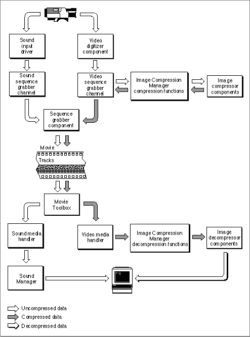
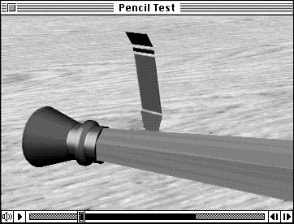
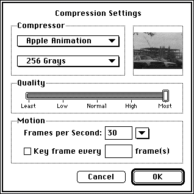

Creating and Editing Movies
More sophisticated applications allow the user to create new movies and edit existing ones. An example of a movie-creating application is an electronic mail system that supports the creation and transmission of video memos. Other examples are an application that might be included in a video digitizer card package, an architectural walk-through program, or an application that creates animation sequences that can be saved as QuickTime movies.Movie-creating applications fall into two categories:
If you are creating an application that creates or edits movies, you are going to use more of the capabilities of the Movie Toolbox and the other managers that make up QuickTime. Figure 1-4 shows some of these other elements in an expanded view of
- those that use a sequence grabber component and the compression functions of the Image Compression Manager to obtain movie data
- those that make a movie and then use the Movie Toolbox and the decompression functions of the Image Compression Manager to work with the movie data
the QuickTime architecture. For comprehensive information on the video digitizer component, the sequence grabber channel component, the sequence grabber component, and video and media handlers, see Inside Macintosh: QuickTime Components.Figure 1-4 Capturing and playing back movies

Movie-Editing Applications
The Movie Toolbox includes functions that help your application provide movie-editing capabilities to the user. The easiest way to allow the user to edit a movie is to use the movie controller component provided by Apple.Alternatively, you can use QuickTime's editing functions to remove, copy, replace, rearrange, or extend the content of movies. The user interface for editing is up to you, as long as you observe the guidelines suggested by Apple (see the chapter "Movie Toolbox" later in this book for more information on human interface guidelines for movie applications).
To give a user some simple editing tools, you could use the movie controller
component to create a movie-editing window similar to the one shown in Figure 1-5.Figure 1-5 Apple's movie controller with a portion of the movie selected for editing

This window gives the user access to various viewing and editing controls. These controls include a real-time position controller that allows random access over the length of the movie, single-step controls in both forward and reverse directions, visual feedback for selecting a sequence of frames in the movie, and a rectangular marker highlighting the currently displayed frame.
Movie-Creating Applications
Applications that create QuickTime movies can capture the movie's data from an external source and store it in a media. As with any movie, this data may be digitized video, digitized sound, computer animation, MIDI (Musical Instrument Digital Interface) data, external data such as an audio CD or videotape, and so on. Each type of data in a movie has an associated movie track. Movie tracks contain an edit list that sequences the data stored in the media.The Movie Toolbox supplies functions that allow you to modify the edit list of the tracks in a movie to rearrange, remove, and extend the playback display sequence of the data in the movie. You can use these functions to create an application that captures external video and creates movies.
Figure 1-6 shows a sample user interface for a video-capture application. Before the user digitizes the data, the application displays an editing window (called a monitor window) to help preview the information prior to capturing it.
Figure 1-7 shows a dialog box that this application provides to allow the user to select compression methods for video using the standard image-compression dialog component.
Figure 1-7 Compression settings

The remainder of this book provides the technical reference you need to develop an application that lets users display, edit, cut, copy, and paste movies and movie data in the same way that they currently manipulate text and graphic elements.
Chapter 2 discusses the Movie Toolbox, the set of functions with which you can create and modify movies and movie files.
Chapter 3 describes the Image Compression Manager, with which your application can compress and decompress still images and video sequences.
Chapter 4 describes the format and content of movie resources and movie files.
This chapter is of interest only to developers of QuickTime components.The book concludes with a glossary and an index.